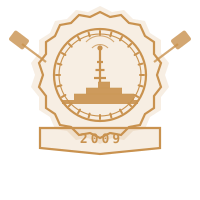

НИУ ВШЭ в рейтингах
Магистратура по кибербезопасности входит в состав одного из ведущих вузов России по подготовке специалистов ИБ. Вот почему выбор ВШЭ — это инвестиция в признанное образование:
 вахта · удалённо
вахта · удалённо
14+ лет в связи и сетевой инфраструктуре, из них более 7 лет — на позициях старшего и ведущего специалиста связи в промышленной группе компаний. Начинал с физического уровня — ВОЛСВОЛСВолоконно-оптические линии связи. Сварка волокна, измерения, прокладка трасс — то, по чему потом ходит весь сетевой трафик предприятия., СКС, АТС, СКУД, — прошёл через обслуживание ЦОД и сетевого оборудования и пришёл к проектированию контроля доступа и сегментации сети на уровне корпоративных стандартов.
Совмещаю практический опыт эксплуатации сетей с системным подходом к документированию, автоматизации и защите информации: внедрял AAA-политикиAAAAuthentication, Authorization, Accounting. Кто зашёл, что ему разрешено, что он сделал. Основа контролируемого доступа к сетевому оборудованию. (RADIUS, TACACS+, 802.1X802.1XСтандарт аутентификации на уровне порта. Устройство не получает доступ в сеть, пока не подтвердит легитимность — розетка в переговорке перестаёт быть дырой в периметре.), проектировал VLAN/STP-сегментацию, готовил материалы по требованиям 187-ФЗ187-ФЗЗакон о безопасности критической информационной инфраструктуры. Обязывает промышленные предприятия категорировать значимые объекты и защищать их по требованиям регулятора. и приказов ФСТЭК №235/239 в рамках защиты КИИКИИКритическая информационная инфраструктура — системы, отказ которых бьёт по экономике, безопасности или здоровью людей. Горнодобывающее производство попадает под это определение..
Сейчас — заочная магистратура в НИУ ВШЭ по направлению «Кибербезопасность», параллельно с вахтовой работой в группе компаний «Полюс».
Путь через физический уровень связи к сетевой безопасности промышленных объектов.


От техника-электромеханика до магистратуры по кибербезопасности в НИУ ВШЭ.



Официальные благодарности руководства · прокрутите вбок →
За добросовестный труд, высокий уровень профессионализма, активное участие в развитии компании и в честь профессионального праздника — Дня металлурга
За успешно реализованный проект по промышленному видеонаблюдению в карьере НГОКа
Прослушал курс «PROTEI EPC Private LTE, уровень BASIC» — сертификат № 126-3166
Вручение благодарности на торжественном мероприятии в честь Дня металлурга
Магистратура по кибербезопасности входит в состав одного из ведущих вузов России по подготовке специалистов ИБ. Вот почему выбор ВШЭ — это инвестиция в признанное образование:
Рабочий справочник по законам и приказам, с которыми имею дело. Раскройте пункт — что он требует на практике.
Каждый проект открывается отдельно — подробное описание, стек и результат.
Flask-приложение для автоматической сборки конфигураций Huawei S5731: парсинг существующих L3-секций, определение VLAN, генерация готового конфига с RADIUS/TACACS+ и 802.1X.
Проект видеонаблюдения в карьере НГОКа: сетевая часть системы, отказоустойчивость каналов, интеграция с диспетчерской. Отмечен благодарностью управляющего директора.
Проектирование сегментации сети (VLAN, STP, L3) и внедрение контроля доступа по стандарту 802.1X с AAA-политиками на производственных площадках.
Радиосеть для подвижной горной техники — крупнейшее внедрение Infinet на подвижных объектах. Стала транспортом для автоматической диспетчеризации Wenco: телеметрия и задания в реальном времени.
Технологическая радиосвязь LTE на горнодобывающих объектах: устойчивое покрытие движущейся техники в чаше карьера для телеметрии и диспетчеризации. Ядро PROTEI EPC.
Теоретические материалы и лабораторные работы по защите критической информационной инфраструктуры в рамках требований 187-ФЗ и приказов ФСТЭК.